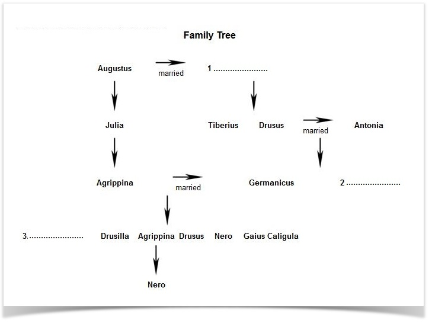

The Family of Germanicus
Germanicus is not a name that many people are familiar with today, but the man and his family are central figures in the story of one of the most colourful imperial dynasties the world has ever known – the Julio-Claudians.
The Julio-Claudians get their name from two families of the old Roman republic. Both families were old. The Julians had an impeccable aristocratic pedigree, while the Claudians were one of the most politically powerful families in the state. The two were thrown together into an alliance during the troubles which gripped Rome during the fall of the Republic.
Julius Caesar, the most famous member of the Julian family, led his legions in the conquest of Rome. Though Caesar was a great general, he lacked the political skills to control the Roman senate and Caesar was killed by the senators during one of their meetings. Another round of civil wars followed, and Caesar’s great-nephew, Augustus, became the ruler of Rome.
In contrast to Caesar, Augustus was a superb, uncompromising and ruthless politician. Early in his career he realized that his family could not rule alone, and he allied himself with the Claudians by marrying a woman called Livia Drusilla. Livia was not only a Claudian herself, but the former wife of another Claudian. She had two children by her first marriage, Tiberius and Drusus.
When he grew up, Drusus married Antonia, the daughter of Mark Antony. They had two children, one called Claudius and the other named Tiberius after his uncle and grandfather (Tiberius was a common Roman name, and often used for members of the Claudian family.)
Tiberius joined the army while he was still a young man, and turned out to be an excellent soldier. At the time, the Romans were busy with a major war in Germany. This war had not been going well, and the Romans lost a number of legions during a major battle in the Teutonwald forest. Tiberius was one of the commanders who helped to restore the power of Rome, and to celebrate his victories, and to distinguish him from his uncle, the soldiers started calling him Germanicus.
Germanicus, or Nero Claudius Drusus Germanicus to give him his proper name, was not only an excellent commander, but one who took great care that his soldiers were well supplied and looked after. He was loved by the troops he commanded and this love helped him to bring the legions back under control when they mutinied on hearing of the death of Augustus.
Since Augustus had no sons he had adopted Tiberius, the uncle of Germanicus. As the son of Augustus, Tiberius became emperor after him. Augustus had known how popular Germanicus was, and considered adopting him instead of Tiberius, but instead adopted Tiberius and made Tiberius adopt Germanicus. His plan was that power should go from himself, to Tiberius and then to Germanicus and his sons. Germanicus had already become closer to the Julian family by his marriage to Agrippina, the grand-daughter of Augustus.
Sadly, the glittering career of Germanicus did not happen. From Germany he want to Asia Minor where he again won victories for Rome, but on his return from a trip to Egypt he became ill and died. Some modern historians believe that Germanicus died of malaria, but Germanicus and his wife were both convinced that he had been poisoned by his enemies. Among those they suspected was Tiberius, the emperor, since it was felt he wanted power to pass to his own son rather than to Germanicus.
With the clear line of succession destroyed, members of the imperial court started to plot and scheme to see who would be emperor after Tiberius, who was already an old man. The conspiracies drew in the surviving members of the family of Germanicus, and the two eldest boys were accused of treason and killed. One daughter, Julia Livilla, was married to the son of Tiberius and is believed to have poisoned him – partly to help the plots of her lover and partly to avenge the ‘poisoning’ of her father. Agrippina, the wife of Germanicus was exiled and starved herself to death.
One boy survived, a young man called Gaius. Tiberius made him live in his house where he could watch him carefully, but also because Tiberius was true to his promise that when he died the children of Germanicus would come to power. Gaius did indeed become emperor, but the mental stress of the earlier years could not be undone, and he is known today as the mad emperor Caligula.
Gaius Caligula was assassinated, but history had not done with the children of Germanicus. The next emperor was Claudius, the brother of Germanicus. He married, another daughter of Germanicus called Agrippina after her mother. Agrippina, a direct descendant of Augustus, was thus the wife and niece of Claudius, the sister of Caligula, and eventually, the mother of another emperor. This was Nero, the tyrant emperor whose death marked the end of the descendants of Germanicus and the Julio-Claudian dynasty of emperors.
Questions 1-3
Look at the diagram (Family Diagram of Augustus) and Fill in the missing names in this family tree.

Questions 4-11
In boxes 4-11 on your answer sheet, write
YES if the statement agrees with the claims of the writer
NO if the statement contradicts the claims of the writer
NOT GIVEN if it is impossible to say what the writer thinks about this
4. Agrippina, wife of Germanicus killed herself
5. Augustus was the great-great-grandfather of Nero
6. Claudius was the father-in-law of Caligula
7. Antonia was Livia’s daughter-in-law
8. Agrippina was the daughter of Tiberius
9. Two of Germanicus’ children died soon after birth
10. Nero had no brothers or sisters
11. Julia Livilla plotted to poison her lover
Questions 12-16
A-G shows the family relationship.
Fill in the family relationship described in the reading passage and write the answers on your answer sheet from 12-16.
A. Grandmother B. Stepson C. Brother D. Mother-in-law E. Daughter F. Grandson G. Nephew
12. Livia was Antonia’s ………………..
13. Gaius Caligula was Claudius’ ………………..
14. Germanicus was Livia’s ………………
15. Antonia was Gaius Caligula’s …………………
16. Drusus was Augustus’ …………………..
Answer:
1. Livia
2. Claudius
3. Julia Livilla
4. true
5. true
6. false
7. true
8. false 9. not given
10. not given
11. false
12. D
13. G
14. F
15. A
16. B